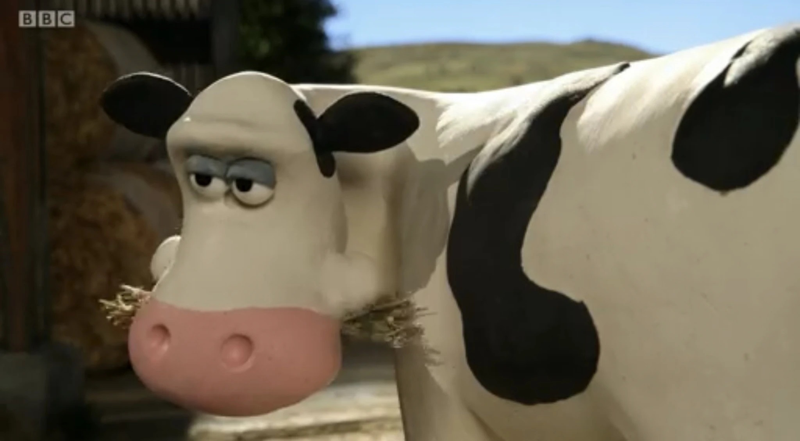
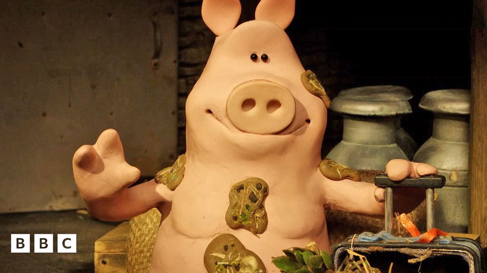
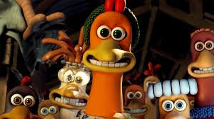

Cows
I love cows for their calm nature and the milk they provide. My future farm will have open pastures for them to roam freely.
Pigs
Pigs are intelligent and social animals. I plan to build a mud park for them to play and stay cool in summer!
Chickens
Chickens are great for eggs and have fun personalities. I want to give them a safe, spacious coop.
Farm Plan - FAQ
Where will your farm be?
I'm planning to settle in a peaceful countryside, possibly in southern Poland or western Ukraine.
How will you care for the animals?
Daily care with lots of love, routine vet visits, and natural, fresh food.